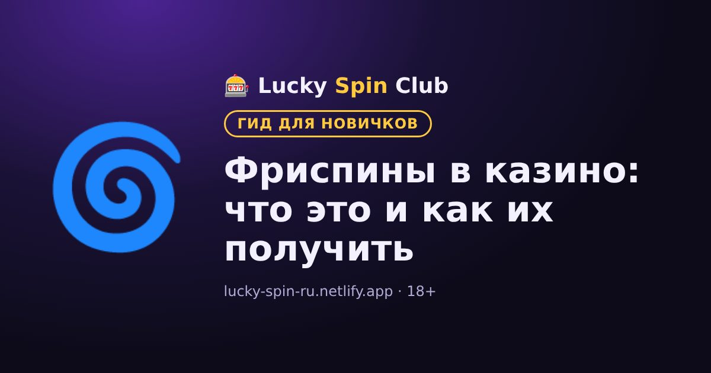

Фриспины в казино: что это и как их получить

Обновлено: 6 ноября 2026
Фриспины (free spins) — это бесплатные вращения в игровых автоматах. Их можно получить двумя разными способами, и это важно не путать.
Два вида фриспинов
- Бонусные фриспины от казино. Казино начисляет их за регистрацию, депозит или в рамках акций. Обычно они действуют в конкретном слоте.
- Фриспины внутри слота. Это функция самой игры: например, выпало три символа scatter, и автомат запускает бесплатные вращения.
Как получить бонусные фриспины
- В составе приветственного пакета для новых игроков.
- За пополнение счёта в рамках акций.
- В турнирах и программах лояльности.
Актуальные предложения ищите в разделе «Бонусы» или «Акции» на сайте казино.
Условия фриспинов
- Стоимость спина фиксирована казино, её нельзя изменить.
- Слот. Фриспины работают только в указанной игре.
- Срок действия. Неиспользованные фриспины сгорают.
- Вейджер на выигрыш. Выигрыш с фриспинов часто нужно отыграть. Подробнее — в статье «Что такое вейджер».
Совет
Перед активацией прочитайте, сколько дней действуют фриспины и есть ли лимит на вывод выигрыша.
Готовы попробовать? Регистрация занимает около минуты.
🎁 Получить бонус🧮 Посчитайте свой бонус: в нашем калькуляторе вейджера видно, сколько нужно отыграть и выгоден ли бонус.
Открыть калькуляторЧасто задаваемые вопросы
Можно ли вывести выигрыш с фриспинов?
Да, но часто только после отыгрыша по вейджеру и в пределах лимита на вывод, если он есть в условиях.
Можно ли использовать фриспины в любом слоте?
Как правило, нет: бонусные фриспины действуют только в слоте, указанном в условиях акции.
Сгорают ли фриспины?
Да, у фриспинов есть срок действия. Неиспользованные вращения после него обычно аннулируются.